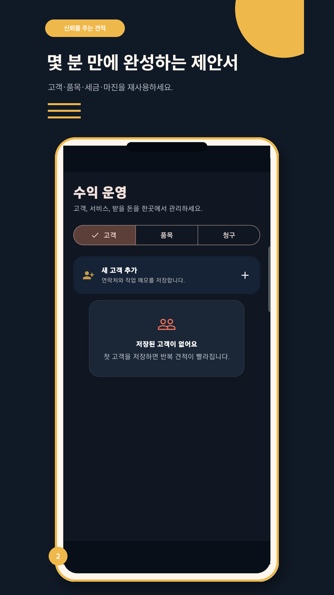
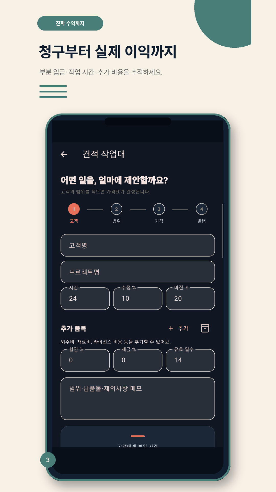
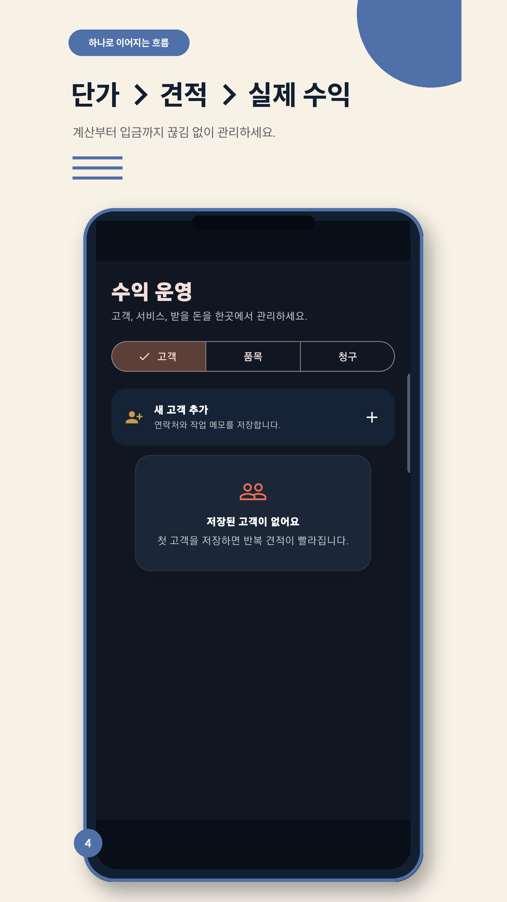
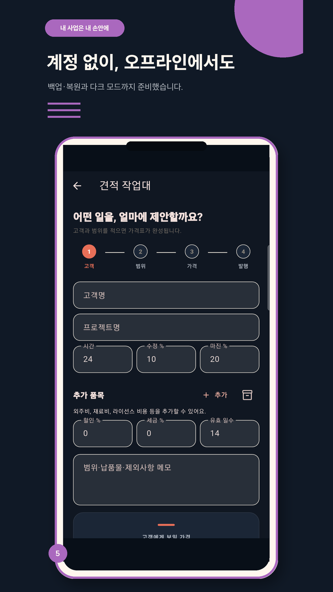

흔들리지 않는 단가
목표 수입, 고정비, 가동률을 반영해 손해 보지 않는 시간 단가를 계산합니다.
단가 계산에서 끝나지 않고 견적이 실제 입금과 수익으로 이어질 때까지 현재 상태와 다음 행동을 보여줍니다.
목표 수입, 고정비, 가동률을 반영해 손해 보지 않는 시간 단가를 계산합니다.
고객과 서비스 품목을 재사용하고 할인, 세금, 수정 범위와 마진을 명확히 담습니다.
수락된 견적을 청구서로 전환하고 부분 입금, 잔액, 지급기한과 연체를 기록합니다.
실제 작업시간과 추가 비용을 입력해 예상 마진과 실제 수익을 비교합니다.
스토어에 등록된 한국어 화면과 동일한 흐름입니다. 장식용 목업이 아니라 실제 사용 화면을 보여줍니다.




자주 쓰는 고객과 품목을 저장해 견적 작성 시간을 줄입니다.
반복되는 프로젝트 구성을 템플릿으로 저장하고 다시 사용합니다.
고객에게 전달하기 좋은 정돈된 문서를 미리 보고 공유합니다.
수락과 거절 결과를 기록해 어떤 견적이 성과로 이어졌는지 확인합니다.
계약금과 중도금처럼 여러 번 들어오는 입금과 남은 잔액을 추적합니다.
JSON 파일을 직접 내보내고 복원해 데이터 이동을 사용자가 통제합니다.
구독이나 광고로 흐름을 방해하지 않습니다. 무료 단가 계산으로 시작하고, 업무 규모가 커지면 일회성 Pro 구매로 확장합니다.